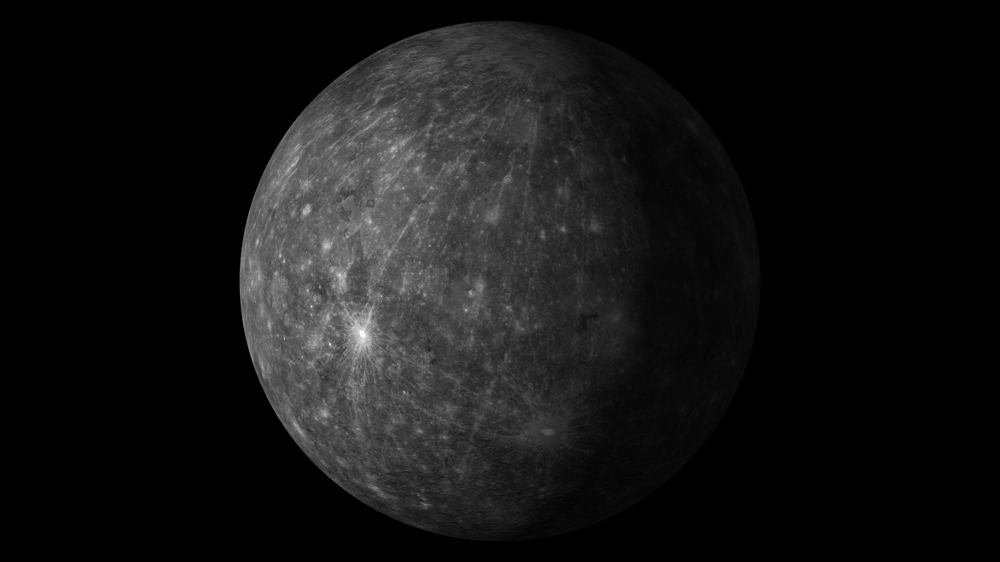
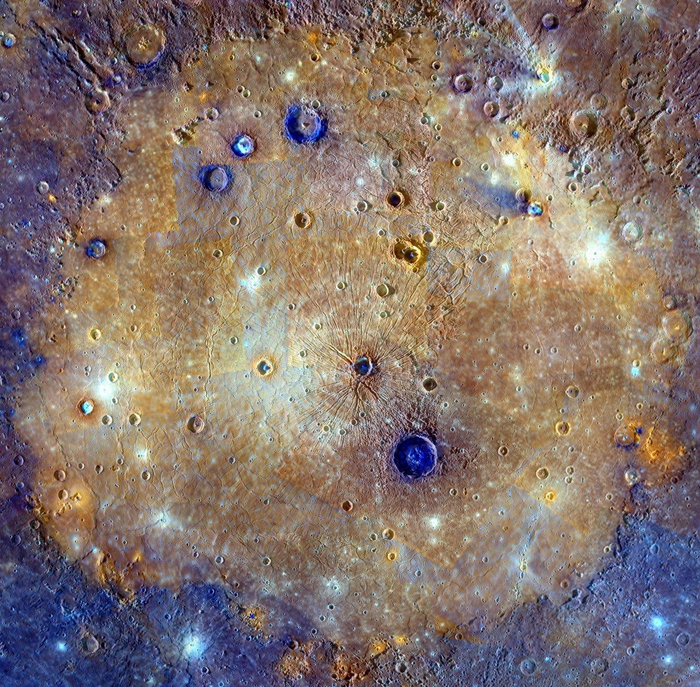
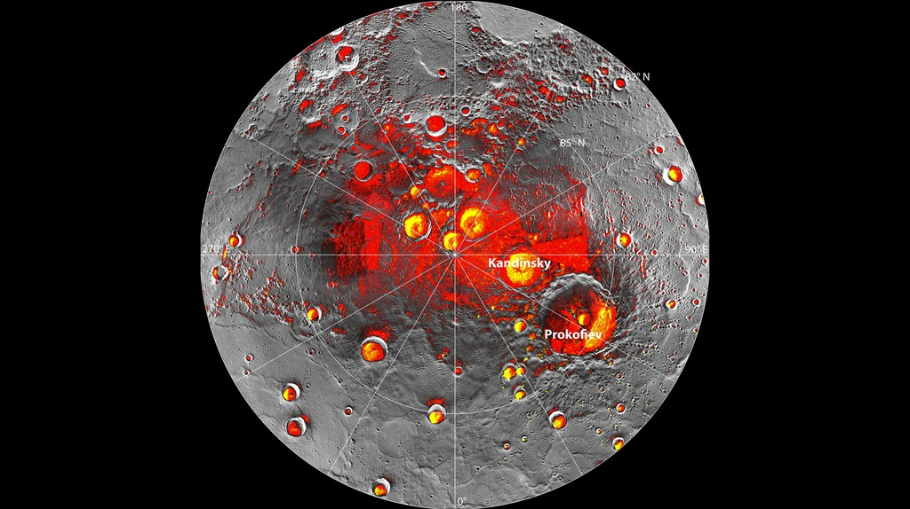

Mercury is the smallest planet in the Solar System and the closest world to the Sun. Despite its small size, Mercury possesses a massive iron core, ancient impact basins, towering cliffs, and one of the most extreme temperature ranges known among the planets. This page combines scientific knowledge with interactive presentation to help you explore Mercury in depth.
Mercury is the smallest major planet in our Solar System.
Length of Year
88 Days
Mercury completes one orbit around the Sun every 88 Earth days.
Gravity
3.7 m/s²
Surface gravity is only about 38% of Earth's.
Natural Moons
0
Mercury has no known natural satellites.
Mercury Overview
Mercury is the innermost planet of our Solar System and the closest world to the Sun.
Although it is the smallest major planet, Mercury is one of the densest planets because of its enormous iron core, which occupies nearly 85% of its radius.
Its heavily cratered landscape preserves billions of years of Solar System history, making Mercury an invaluable laboratory for understanding planetary formation and evolution.
Planet Classification
Planet Type — Terrestrial Planet
Solar System Order — 1st Planet
Average Distance — 57.9 Million km
Orbital Period — 88 Earth Days
Rotation Period — 58.6 Earth Days
Average Orbital Speed — 47.4 km/s
Axial Tilt — 0.034°
Physical Characteristics
Diameter — 4,879 km
Radius — 2,439.7 km
Mass — 3.30 × 10²³ kg
Density — 5.43 g/cm³
Surface Gravity — 3.7 m/s²
Escape Velocity — 4.25 km/s
Natural Satellites — None
Environment
Atmosphere — Extremely Thin Exosphere
Main Elements — Oxygen, Sodium, Hydrogen
Magnetic Field — Weak but Global
Average Temperature — 167°C
Day Temperature — 430°C
Night Temperature — -180°C
Water Ice — Polar Craters
Internal Structure
Mercury possesses the largest metallic core relative to its size of any planet in the Solar System. Scientists believe that much of Mercury's rocky mantle was stripped away during an enormous collision early in Solar System history.
Core
Iron-Nickel
Mercury's enormous metallic core occupies nearly 85% of the planet's radius.
Mantle
Silicate Rock
A relatively thin rocky mantle surrounds the massive core.
Crust
35 km
The outer crust is heavily cratered and covered with volcanic plains.
Magnetic Field
Active Core
Mercury's liquid outer core generates a weak magnetic field.
Surface Features
Mercury's surface resembles Earth's Moon but contains giant cliffs, enormous impact basins, volcanic plains, and ancient craters that have survived for billions of years.
Caloris Basin
One of the largest known impact basins in the Solar System with a diameter exceeding 1,500 kilometers.
Scarps
Gigantic cliffs stretching hundreds of kilometers formed as Mercury slowly cooled and contracted.
Polar Ice
Radar observations have confirmed deposits of water ice hidden inside permanently shadowed polar craters.
Orbit & Rotation
Mercury travels around the Sun faster than any other planet while rotating surprisingly slowly. It completes three rotations for every two orbits around the Sun, a phenomenon known as a 3:2 spin-orbit resonance.
Fastest Orbit
47.4 km/s
Mercury has the fastest orbital speed in the Solar System.
Solar Day
176 Days
A complete sunrise to sunrise on Mercury lasts 176 Earth days.
Year
88 Days
Mercury completes two years before experiencing one solar day.
Axial Tilt
0.034°
The almost nonexistent tilt means Mercury has virtually no seasons.
Atmosphere & Temperature
Unlike Earth, Mercury does not possess a thick atmosphere. Instead, it has an extremely thin exosphere composed of atoms blasted from its surface by solar radiation, meteorite impacts, and the solar wind. Without a dense atmosphere to trap heat, temperatures vary dramatically between day and night.
Atmosphere
Exosphere
Mercury's atmosphere is so thin that atoms rarely collide with one another.
Day Temperature
430°C
The side facing the Sun becomes hotter than many household ovens.
Night Temperature
-180°C
Without atmospheric insulation, temperatures plunge dramatically after sunset.
Main Elements
O • Na • H
Oxygen, sodium, hydrogen, helium and potassium dominate Mercury's exosphere.
Magnetic Field
Mercury is the only terrestrial planet besides Earth known to possess an active global magnetic field. Scientists believe this magnetic field is generated by the movement of molten iron inside its enormous metallic core.
Global Magnetic Field
Although only about 1% as strong as Earth's, Mercury's magnetic field deflects charged particles from the solar wind.
Magnetosphere
Mercury has a small but dynamic magnetosphere that constantly interacts with the intense solar wind.
Scientific Importance
Understanding Mercury's magnetic field helps scientists learn how planetary cores evolve over billions of years.
Major Space Missions
Only a few spacecraft have visited Mercury because reaching the closest planet to the Sun requires enormous amounts of energy. Each mission has transformed our understanding of this fascinating world.
Mariner 10
1974–1975
The first spacecraft to visit Mercury, capturing the first close-up photographs of its cratered surface.
MESSENGER
2011–2015
The first spacecraft to orbit Mercury, mapping nearly the entire planet and revealing evidence of water ice and volcanic activity.
BepiColombo
2018–Present
A joint ESA and JAXA mission currently traveling toward Mercury to investigate its origin, interior, magnetic field, and surface.
Mercury Exploration Timeline
1973
Mariner 10 launched toward Mercury.
1974
First successful flyby of Mercury.
2004
NASA launched the MESSENGER spacecraft.
2011
MESSENGER became the first spacecraft to orbit Mercury.
2015
MESSENGER intentionally impacted Mercury after completing its mission.
2018
BepiColombo launched by ESA and JAXA for the next generation of Mercury exploration.
Interesting Facts
Fastest Planet
Mercury travels around the Sun faster than any other planet.
Smallest Planet
Mercury is even smaller than several moons in the Solar System.
Huge Iron Core
Its metallic core occupies roughly 85% of the planet's radius.
No Moons
Mercury has no natural satellites or ring system.
Water Ice
Permanent shadowed craters near the poles contain frozen water ice.
Extreme Temperatures
Surface temperatures range from approximately −180°C to 430°C.
Scientific Importance
Mercury is far more than just the smallest planet in the Solar System. Because it formed very close to the young Sun, Mercury preserves valuable clues about how rocky planets originated over 4.5 billion years ago. Its enormous iron core, ancient impact craters, volcanic plains, and unusual magnetic field continue to challenge scientists' understanding of planetary evolution.
Unlike Earth, Mercury has almost no atmosphere capable of protecting its surface from meteorite impacts. As a result, billions of years of collisions remain preserved across its landscape. Huge impact basins such as Caloris Basin provide evidence of violent events that occurred during the early formation of the Solar System.
Mercury also surprised scientists by possessing a global magnetic field despite being much smaller than Earth. Measurements from NASA's MESSENGER spacecraft revealed that a portion of Mercury's metallic core remains molten today. Understanding why Mercury still generates a magnetic field helps scientists better understand the internal evolution of rocky planets throughout the universe.
Mercury is also an excellent comparison for thousands of rocky exoplanets discovered orbiting other stars. Many of those distant worlds orbit extremely close to their parent stars and may experience conditions similar to Mercury. By studying Mercury, astronomers gain valuable insights into the evolution of rocky planets beyond our Solar System.
Mercury Gallery
Images inspired by spacecraft observations and scientific visualization.

Global View
Mercury photographed by NASA's MESSENGER spacecraft.

Caloris Basin
One of the largest impact structures in the Solar System.

Polar Region
Radar observations reveal water ice hidden inside permanently shadowed craters.
Frequently Asked Questions
Why is Mercury so hot?
Because Mercury orbits very close to the Sun and has almost no atmosphere to retain or redistribute heat.
Does Mercury have moons?
No. Mercury has no known natural satellites.
Can humans live on Mercury?
Current technology cannot support permanent human settlements due to the planet's extreme temperatures, radiation, and lack of atmosphere.
Why is Mercury important?
Mercury provides valuable evidence about planetary formation, giant impacts, magnetic fields, and the early history of the Solar System.